精选 130 本好书，点击书籍可查看详细内容。
《人类简史》
重新审视人类历史的宏大叙事
《列奥纳多・达・芬奇传》
人类历史上最完整的跨界天才
《国富论》
现代经济学的奠基之作
《孙子兵法》
战略思维的源头，竞争与博弈的永恒智慧
《富爸爸穷爸爸》
穷人和富人思维的根本差异
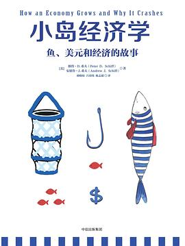
《小岛经济学》
用故事讲透经济学原理
《影响力》
说服力的六大武器，看清操纵的本质
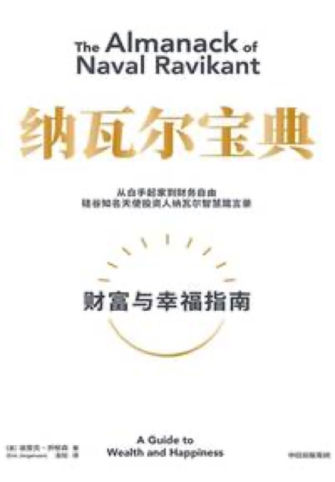
《纳瓦尔宝典》
硅谷天使投资人的财富与幸福哲学
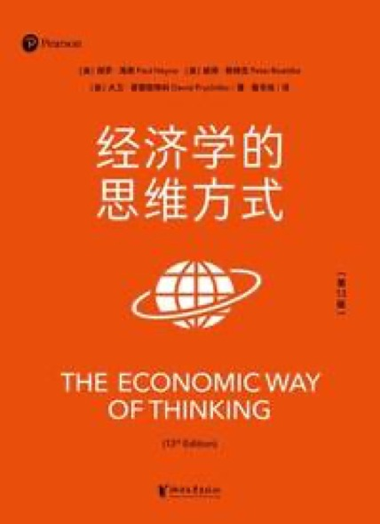
《经济学的思维方式》
经济学入门经典，培养经济学思维
《这就是人性》
中国式的人性洞察，直击社交本质
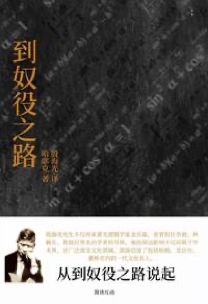
《通向奴役之路》
自由与计划经济的深刻反思
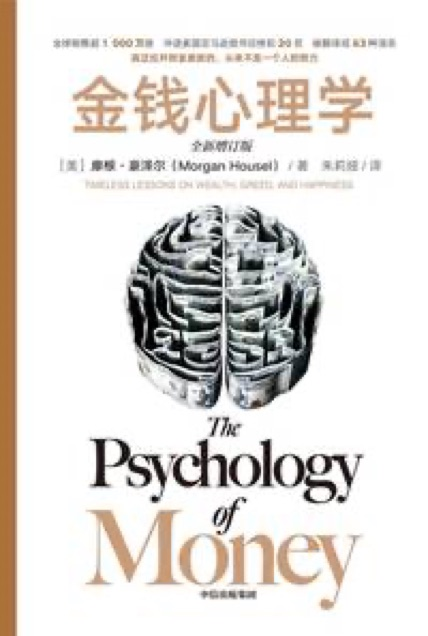
《金钱心理学》
关于金钱的行为经济学，理财先理心
《2049》
凯文·凯利对未来50年的预言
《M 型社会》
中产消亡与社会结构变迁
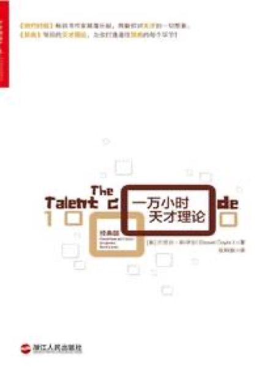
《一万小时天才理论》
精通任何技能的关键一万小时定律
《一头想要被吃掉的猪》
用思想实验挑战常识
《上瘾》
产品设计中的用户行为心理学
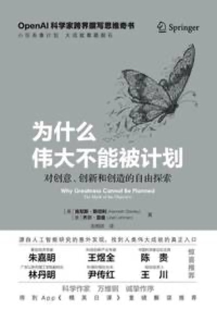
《为什么伟大不能被计划》
创新往往来自意外的发现
《乌合之众》
群体心理学的开山之作
《了不起的盖茨比》
美国梦的幻灭与追寻
《了凡四训》
命由我作，福自己求——中国古代的自我修养书
《亲密关系》
理解爱的本质，经营长期关系
《从 0 到 1》
从无到有的创业思维
《优秀到不能被忽视》
与其追逐激情，不如让自己变得优秀
《傲慢与偏见》
爱情与理智的经典平衡
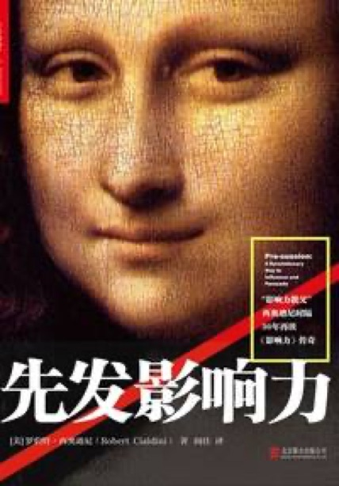
《先发影响力》
在对方做决定前就赢得优势

《免费：商业的未来》
免费商业模式的经济逻辑
《关键冲突》
把冲突转化为合作的艺术
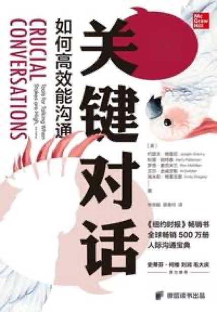
《关键对话》
高风险对话中的沟通技巧
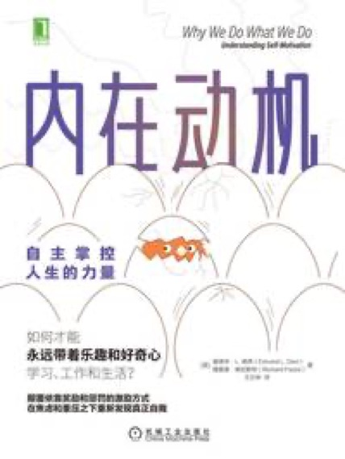
《内在动机》
自主性是驱动人类行为的根本力量
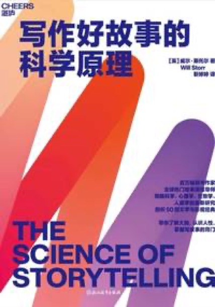
《写作好故事的科学原理》
用科学方法写出打动人心的故事

《创业者的窘境》
创始人面临的常见陷阱
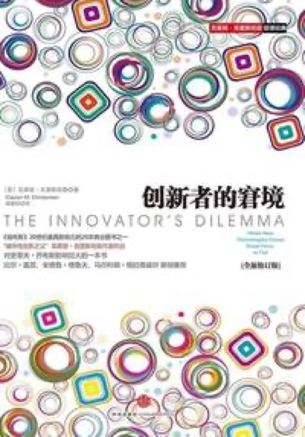
《创新者的窘境》
大公司为什么会被颠覆
《刻意练习》
天才不是天生的，而是刻意练习的结果
《华尔街之狼》
从金融狂人的故事中学习人性和贪婪
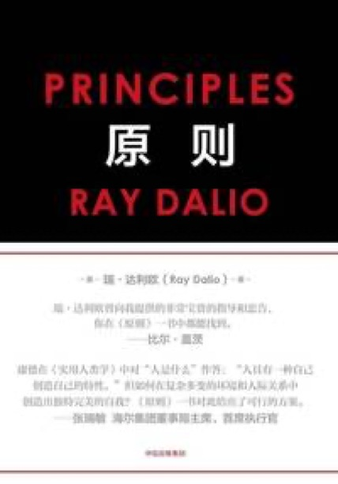
《原则》
如何思考、如果做事的核心原则
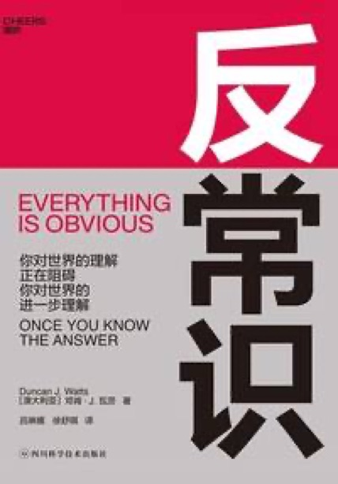
《反常识》
打破直觉，用数据重新认识世界
《反脆弱》
从不确定性中获益的智慧
《史蒂夫・乔布斯传》
改变世界的完美主义者
《史记》
史家之绝唱，无韵之离骚
《君主论》
权力政治学的经典，看透人性的阴暗面
《哲学家都干了些什么》
有趣的西方哲学通俗读本
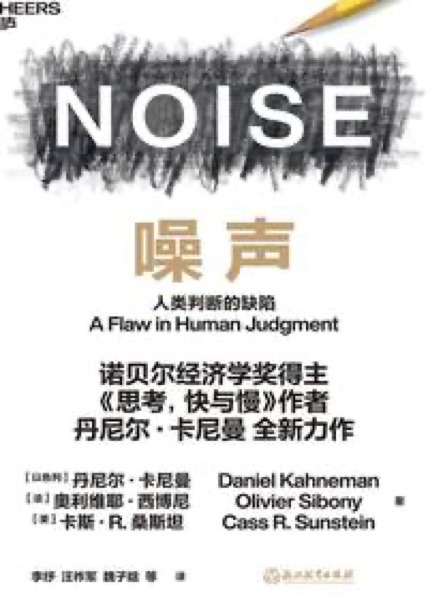
《噪声》
理解决策中的干扰因素，做出更好的判断
《埃隆・马斯克传》
改变世界的科技狂人
《增广贤文》
中国古代智慧的集大成者
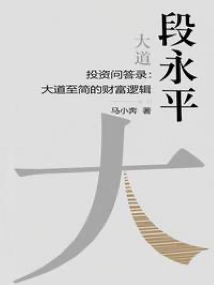
《大道》
段永平的商业与投资智慧
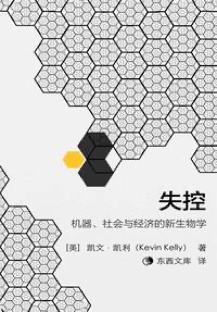
《失控》
互联网时代的预言书
《好的爱，有边界》
健康的关系需要清晰的边界
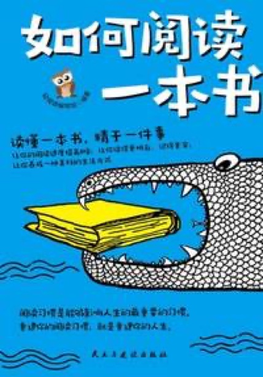
《如何阅读一本书》
主动阅读的方法论，让每本书都物超所值
《娱乐至死》
媒介对文化的毁灭性影响
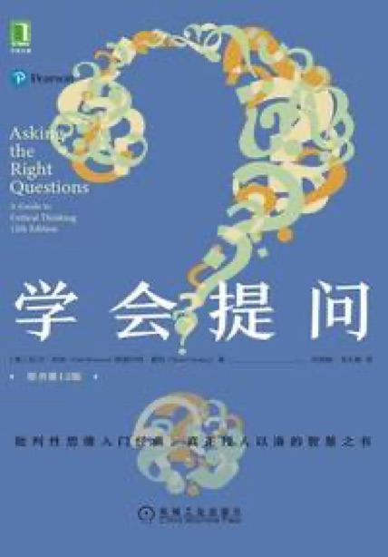
《学会提问》
培养批判性思维
《定位》
占领用户心智的营销经典
《富兰克林传》
美国精神之父的传奇人生
《小狗钱钱》
财商启蒙的最佳读物
《小王子》
用心去看，才能真正看清
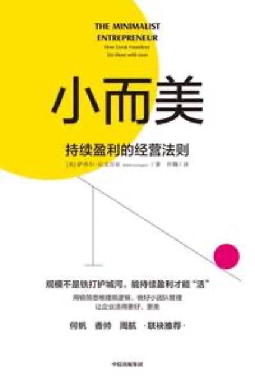
《小而美》
小企业的生存与发展之道
《就业、利息和货币通论》
宏观经济学的圣经
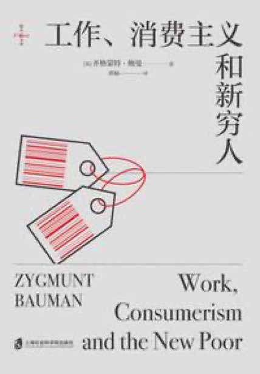
《工作、消费主义和新穷人》
消费主义陷阱下的现代生活困境
《巴拉巴西成功定律》
成功背后隐藏的数学法则
《巴菲特之道》
价值投资的核心理念
《巴菲特致股东的信》
股神的投资哲学原典
《异类》
成功的隐藏因素——时机、出身与环境
《怎样做成大事》
大型项目管理的实战经验
《思考的框架》
掌握多种思维模型，提升决策质量
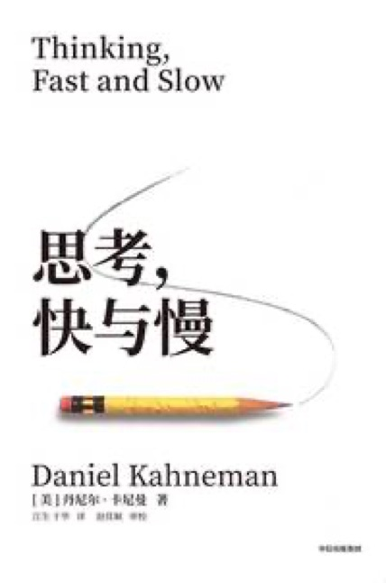
《思考，快与慢》
理解大脑的两套系统，避免决策陷阱
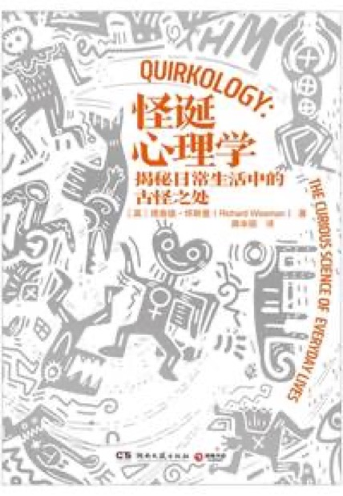
《怪诞心理学》
日常行为背后的有趣心理学实验
《怪诞行为学》
揭示非理性决策背后的心理学机制
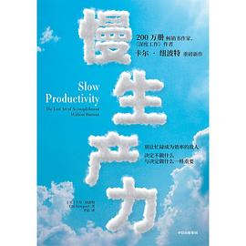
《慢生产力》
在快节奏时代找回深度工作的能力
《成长的边界》
专业化vs通才，重新定义成功路径
《授权：如何激发全员领导力》
释放团队潜能的领导力方法
《掌控习惯》
微小改变的复利效应，让好习惯自动运行
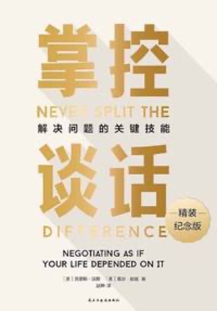
《掌控谈话》
FBI谈判专家的沟通技巧
《无价》
价格心理学的趣味探索
《月亮与六便士》
理想与现实的永恒冲突
《杀死一只知更鸟》
良知与正义的成长教育
《枪炮、病菌与钢铁》
人类社会不平等的地理起源
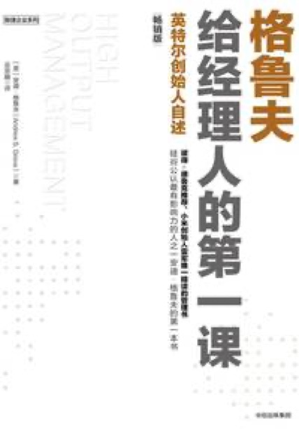
《格鲁夫给经理人的第一课》
英特尔CEO的管理智慧
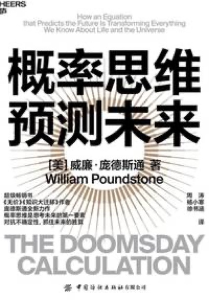
《概率思维预测未来》
学会用概率思维面对不确定性
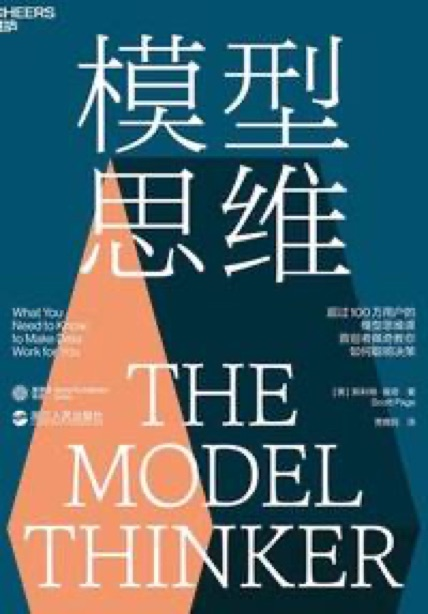
《模型思维》
用数学模型理解复杂世界
《毛选》
培养辩证思维
《津巴多普通心理学》
心理学入门的权威教材
《浪潮之巅》
IT产业兴衰史的精彩记录
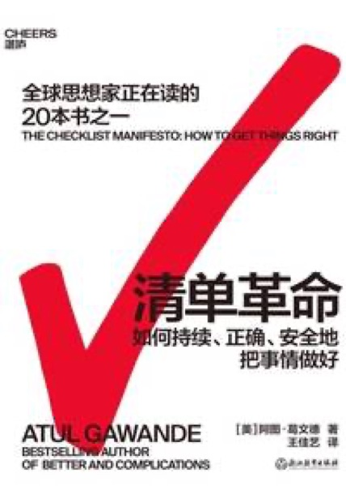
《清单革命》
用清单避免错误，提升团队执行力
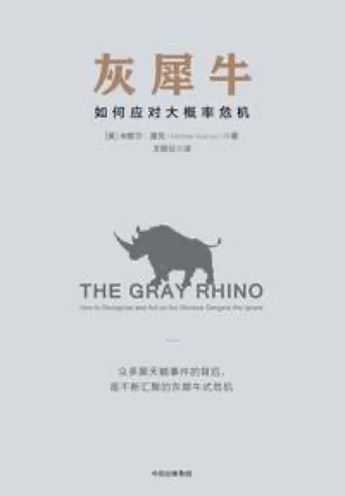
《灰犀牛：如何应对大概率危机》
大概率危机的预警与应对
《牛奶可乐经济学》
生活中随处可见的经济学原理
《牛顿传》
科学史上最伟大的头脑之一
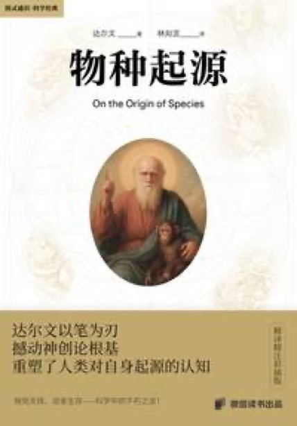
《物种起源》
改变人类世界观的科学革命
《理解未来的 7 个原则》
趋势预测的方法论
《瓦尔登湖》
简单生活的哲学实践
《用事实说话》
如何在敏感对话中保持专业和有效
《社会心理学》
系统理解人与社会的互动
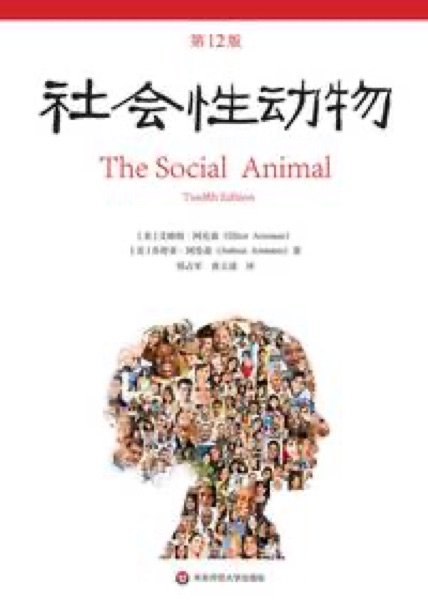
《社会性动物》
社会心理学的经典入门
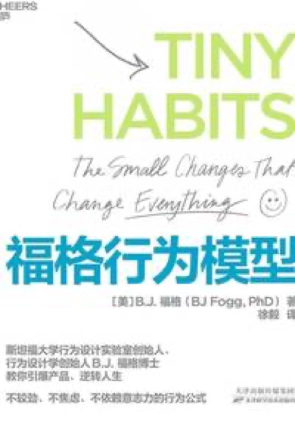
《福格行为模型》
科学的习惯养成方法论
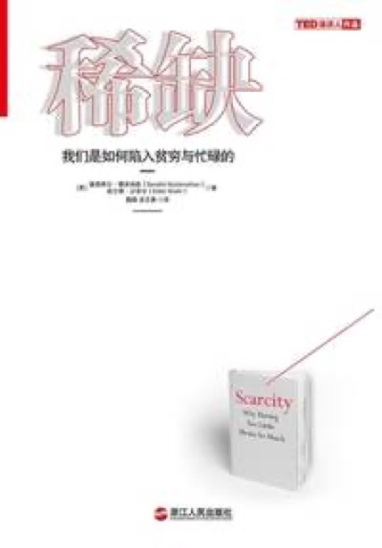
《稀缺》
稀缺心态如何俘获大脑，让我们变笨
《穷查理宝典》
培养多元思维，学习芒格一眼看透事物本质的能力
《穿越寒冬》
创业者如何度过至暗时刻
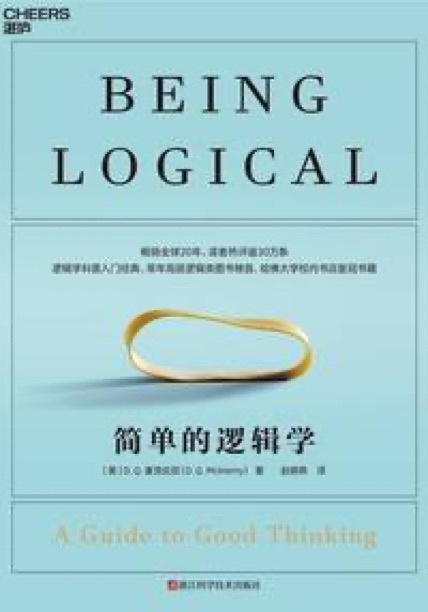
《简单的逻辑学》
逻辑学入门必读，建立清晰思维的基础
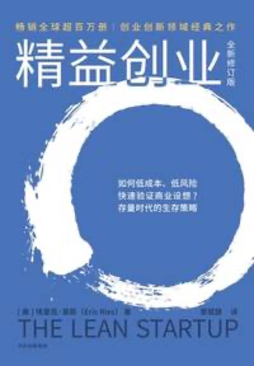
《精益创业》
创业方法论的经典——最小可行产品+快速迭代
《细节：如何轻松影响他人》
微小的改变带来巨大的说服效果
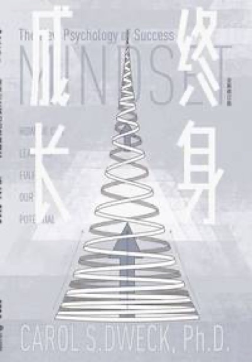
《终身成长》
成长型思维 vs 固定型思维，改变你的人生轨迹
《罗生门》
真相的主观性与人性的复杂
《老人与海》
一个人可以被毁灭，但不能被打败
《肖申克的救赎》
希望是最美好的东西
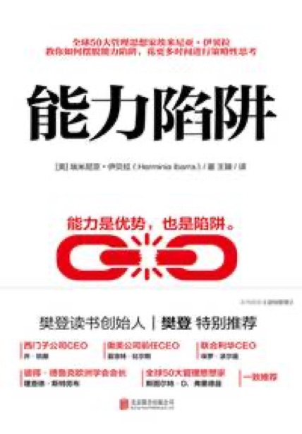
《能力陷阱》
别让现有能力限制你的发展路径
《自卑与超越》
自卑不是缺陷，而是超越的动力
《自控力》
了解意志力的运作机制，更好地管理自己
《自私的基因》
从基因视角理解生命的本质
《苏东坡传》
在逆境中保持乐观的人生典范
《苏菲的世界》
西方哲学史的最佳入门读物
《莎士比亚四大悲剧》
人性的深渊与光辉
《营销管理》
市场营销学的权威教材
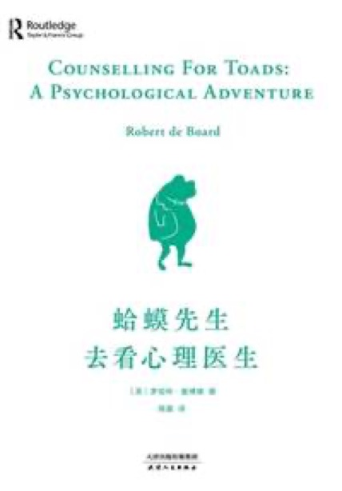
《蛤蟆先生去看心理医生》
心理咨询入门的最佳小说
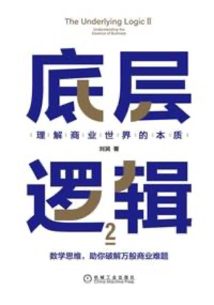
《认识商业》
商业世界的全景指南
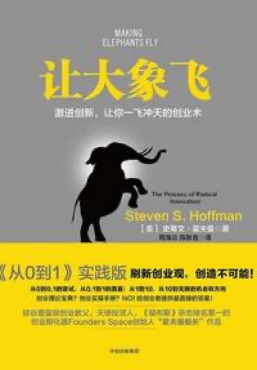
《让大象飞》
创业公司的成长路线图
《谁说大象不能跳舞》
IBM转型的传奇故事
《谈谈方法》
理性思考的奠基之作，怀疑一切才能找到真理
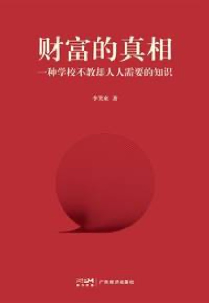
《财富的本质》
财富创造的底层逻辑
《财富自由之路》
通往财务自由的系统性方法论
《责任病毒》
为什么我们总想承担过多责任
《贪婪的多巴胺》
多巴胺如何驱动人类行为
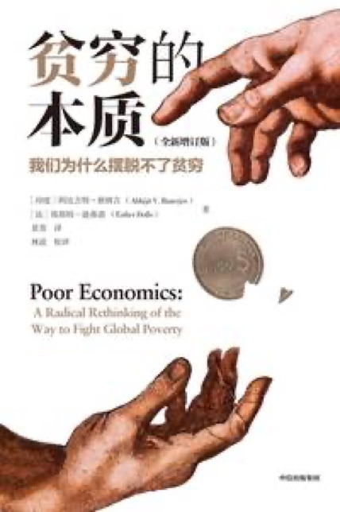
《贫穷的本质》
穷人为什么会穷？诺贝尔奖得主的深度研究
《资本论》
理解资本主义运行规律的巨著
《道德经》
道家思想的最高经典，五千言道尽天地
《金字塔原理》
培养结构化思维
《随机漫步的傻瓜》
运气与实力的真相
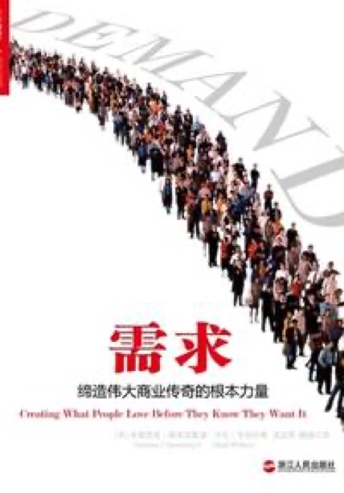
《需求：缔造伟大商业传奇的根本力量》
爆款产品背后的需求逻辑
《非暴力沟通》
用同理心化解冲突，建立深层连接
《高效能人士的 7 个习惯》
个人效能的经典框架
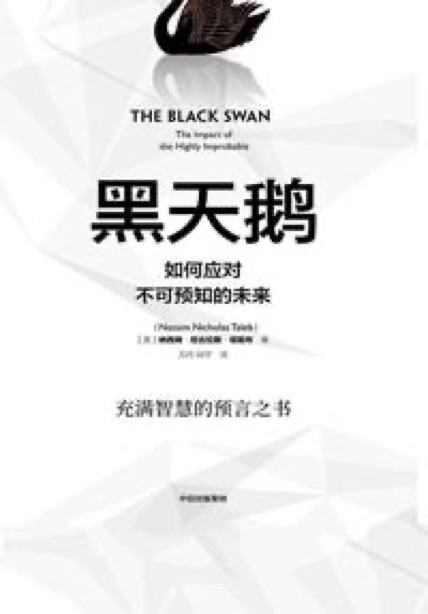
《黑天鹅》
极端事件如何改变世界
《黑客与画家》
硅谷创业者的思考方式，技术与创造力的结合